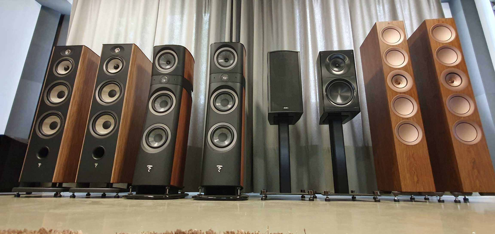

Акустическая система
Акусти́ческая систе́ма (АС) — устройство для воспроизведения звука, конечное звено усилительного тракта (источник — усилитель — АС); состоит из акустического оформления и вмонтированных в него излучающих головок (обычно динамических).
Акустическая система может быть однополосной (один широкополосный излучатель, например, динамическая головка) и многополосной (две и более головок, каждая из которых создаёт излучение в своей частотной полосе).
Однополосная система не позволяет добиться качественного звука во всей полосе частот ввиду трудностей создания излучателя, одинаково хорошо воспроизводящего сигналы во всём воспроизводимом диапазоне слышимых человеком звуковых частот (20 — 20 000 Гц). Также — высокие интермодуляционные искажения при значительном ходе одного излучателя, вызваны эффектом Доплера.
В многополосных системах спектр всех слышимых частот разбивается на несколько перекрываемых между собой диапазонов, посредством фильтров (комбинации резисторов, конденсаторов и катушек индуктивности, или с помощью цифрового кроссовера). Каждый диапазон подаётся на свою динамическую головку, которая имеет наилучшие характеристики в этом диапазоне. Таким образом достигается наиболее высококачественное воспроизведение слышимых человеком звуковых частот.
- 2-полосная схема (НЧ/СЧ + ВЧ динамик)
- 3-полосная схема (НЧ + СЧ + ВЧ динамик)
- 2,5-полосная схема (СЧ/НЧ-динамик озвучивает как низкочастотную, так и среднечастотную области; НЧ динамик лишь «помогает» первому на самых нижних регистрах, но не замещает его в этом диапазоне. Зачастую, в экономических целях, производителями применяются оба динамика одного типа, регулируя разделительную полосу фильтрами)
- 4-полосная схема
Активные и пассивные системы
Акустические системы подразделяются на пассивные (состоят только из излучателя и кроссовера) и активные
(содержат также
усилитель мощности).
Усилитель встраивают внутрь акустической системы по трем причинам:
- облегчается согласование усилителя и излучателей по мощности и другим параметрам, вопросами согласования занимается производитель акустической системы, а не конечный потребитель
- уменьшается стоимость системы, так как нет необходимости в отдельном корпусе для усилителя и мощность усилителя (определяющая его стоимость) не завышена
- нет необходимости в кабеле большого сечения (в случае, если усилитель находится в каждой акустической системе)
- затрудняется обслуживание усилителя, так как акустическая система может быть установлена в труднодоступном месте (например, быть подвешена на некоторой высоте)
- в случае мощных акустических систем усилитель обычно устанавливается в каждую систему, что требует в сравнении с пассивной стереосистемой двух блоков питания вместо одного, что увеличивает стоимость
- в случае большого расстояния между акустической системой и источником звука требуется принимать специальные меры по защите сигнала (поднимать его уровень и использовать балансное подключение)
Для подключения пассивной акустической системы к усилителю обычно используют следующие типы соединений:
- Клеммы или зажимные колодки — в основном домашние акустические системы и системы небольшой мощности
- Разъёмы типа Speakon — профессиональные системы большой мощности.
- Разъёмов типа Jack 3,5 мм, RCA — бытовые акустические системы
- Разъёмов типа Jack 6,3 мм, XLR — профессиональные акустические системы
Если расстояние между усилителем и пассивной акустической системой превышает несколько десятков метров, потери мощности в соединительных проводах достигают значительной величины. Поэтому для озвучивания больших площадей и объектов применяются специальные трансляционные усилители и акустические системы. На выходе трансляционного усилителя имеется трансформатор, повышающий в несколько раз выходное напряжение звукового сигнала, а трансляционные акустические системы содержат понижающий трансформатор с таким же соотношением витков, что и в усилителе.
Недопустимо подключать к трансляционному усилителю обычные акустические системы без трансформатора, это приведёт к выходу их из строя.